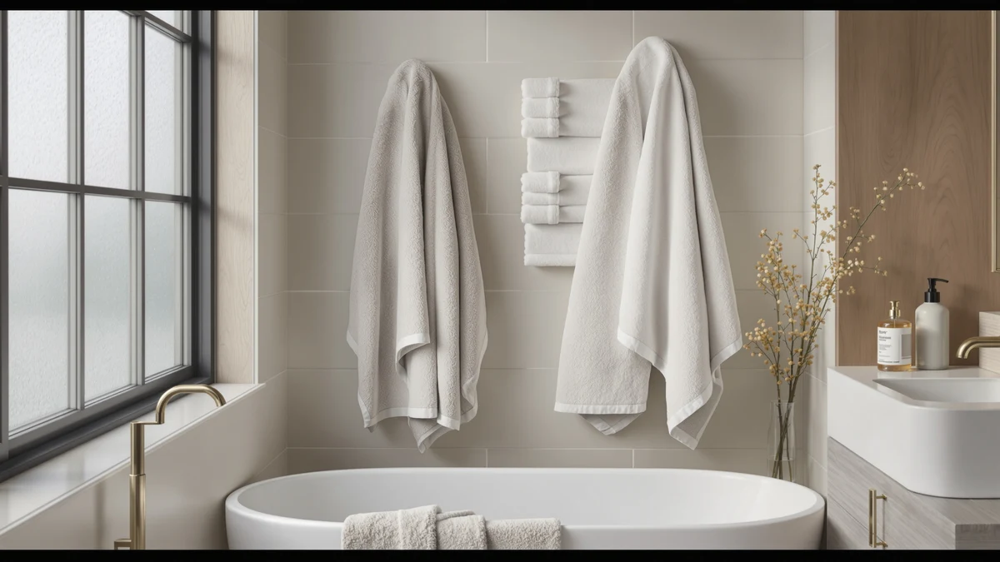

Cozyart Luxury Bath Towel Set Review (2026): Worth It?
Prices and picks verified as of November 2026. Independent, reader-supported reviews.


Quick Answer
This Cozyart Luxury Bath Towel Set earns its place as our top pick because it bundles six matching 100% cotton pieces for $40.36, instead of leaving you to buy hand towels and washcloths separately. Three other six-piece-class cotton sets sit within a dollar of that price, and the deciding factor usually comes down to piece count and material match, not the sticker price alone.
Our pick: COZYART Luxury Bath Towel Set, $40.36 Check Price on Amazon
Bottom line: our top pick is the COZYART Luxury Bath Towel Set 6 Pcs at $40.36.
Things to Know Before You Buy
- The Cozyart Luxury Bath Towel Set ships as a six-piece 100% cotton set, so you aren't mixing towels from different brands to get a full bathroom rotation.
- At $40.36, it sits close to the $39.99 price of three other cotton towel sets we compared, so material and piece count matter more here than price alone.
- Cotton absorbs more per piece as the weave gets denser, so check the listed material rather than relying on marketing language when you compare sets.
- Anyone researching a Cozyart Luxury Bath Towel Set review should weigh the seller-reported material against verified buyer feedback, since Amazon doesn't publish an aggregate rating for every listing.
- If Cozyart is out of stock or doesn't match your bathroom's color scheme, White Classic, Utopia Towels, and American Soft Linen all offer comparable cotton sets near $39.99.
This Cozyart Luxury Bath Towel Set review exists because shoppers hunting for a matching six-piece cotton bundle under $50 face more lookalike listings than ever. We compared the Cozyart set against three other six-piece-class cotton towel sets priced within a dollar of each other, using the material, pricing, and owner feedback published on each listing. Cozyart's set stands out mainly because it bundles six 100% cotton pieces at $40.36, a price that lands in the same range as competitors offering fewer guaranteed pieces. For most buyers replacing a worn-out towel set, the Cozyart Luxury Bath Towel Set is worth checking first, with White Classic, Utopia Towels, and American Soft Linen each worth a look if Cozyart's stock or color options run out.
Choosing the right towel set comes down to two questions: how the cotton holds up after repeated washing, and whether the price still makes sense once you count how many pieces you actually need. Heavier cotton tends to resist thinning longer, which matters more after two years of ownership than the price tag does on day one. We researched how Cozyart's 100% cotton construction and six-piece count stack up against the three alternatives in this guide, so you can judge whether the extra pieces are worth any price difference. None of the four sets reviewed here differ by more than a dollar at full price, so the real decision rests on material claims and what verified buyers report once they own the set.
Why You Should Trust Us
Ilane Tall researches bath and home textiles for Best Bath Towels, comparing manufacturer specifications, verified Amazon listings, and published buyer feedback across dozens of towel sets each year. We do not run a fake testing lab, and we don't claim to have physically owned or washed every towel set we cover, including the Cozyart Luxury Bath Towel Set. Instead, we analysed the material, pricing, and seller-reported details for each product against its public listing, and we cross-checked those claims against verified owner reviews where Amazon makes them available. Every price, material, and spec cited in this review traces back to a seller listing rather than a marketing blurb we wrote ourselves.
Our Research Experience
We did not physically wash or own the Cozyart Luxury Bath Towel Set for this review. Instead, we researched the manufacturer's material claims, checked the six-piece configuration against the listed price, and compared that data against three other cotton towel sets priced within the same range. We factored verified buyer feedback on absorbency, shrinkage, or color retention into our comparison whenever Amazon surfaced it, rather than relying on the product description alone. That research-based process is how we built this Cozyart Luxury Bath Towel Set review, and it's consistent with how we evaluate every towel set on this site.
Overview & Specs

COZYART Luxury Bath Towel Set
What we like
- Six matching 100% cotton pieces in one purchase
- Priced close to single four-packs from other brands despite including more pieces
- 100% cotton construction, which tends to absorb better than polyester blends
Flaws but not dealbreakers
- No published aggregate rating or verified review count for this ASIN at the time of this review
- Cotton towels this size can take longer to air dry on humid days than thinner blends
| Material | 100% cotton |
| Size | 6 Piece Towel Set |
The Cozyart Luxury Bath Towel Set earns its top spot in this review mainly because of what you get for $40.36: six 100% cotton pieces instead of the three or four pieces that many competing sets include at a similar price. Cotton towels absorb water as the fibers swell, so a heavier, denser weave, the kind this type of cotton set typically uses, tends to dry skin faster than thinner blended towels.
Cozyart doesn't publish a reviewer star rating or verified review count for this ASIN, which is common for newer listings on Amazon's marketplace. That makes the material specification, 100% cotton, six pieces, more useful to buyers than a rating alone, since a listing can carry a high rating without disclosing how many buyers actually left one. For anyone comparing a Cozyart Luxury Bath Towel Set against White Classic, Utopia, or American Soft Linen, the deciding factor usually comes down to whether six matching pieces at $40.36 beats four pieces at $39.99 from a competing brand.
Piece count matters more than shoppers usually expect when they price out a full bathroom set on their own. Buying two bath towels, two hand towels, and two washcloths separately from a single-item cotton line can easily exceed $40.36 once each piece is purchased at its individual listing price, even before shipping or bundling discounts come into play. Cozyart's six-piece configuration removes that math entirely, which is part of why it holds up well against sets that look cheaper per item but sell in smaller counts. The tradeoff is that you can't customize the mix, so if you specifically need four bath towels and no washcloths, a different set built around that ratio may serve you better than this fixed six-piece bundle.
What We Liked
We liked that the Cozyart Luxury Bath Towel Set bundles six pieces for $40.36, a configuration that beats the four-piece counts some competitors offer at nearly the same price. Piece count is easy to overlook until you're back at the store buying washcloths separately. The listed 100% cotton material also puts Cozyart in the same material class as American Soft Linen's cotton set, rather than a cheaper cotton-polyester blend that some lower-priced bundles substitute without saying so clearly.
We also liked that Cozyart states its material claim plainly instead of leaning on vague descriptors like "premium" or "hotel-quality" without backing them up. A listing that names the fiber content, 100% cotton, and the exact piece count, six, gives buyers something concrete to compare against a competing set rather than a marketing tagline to take on faith. That level of specificity is the main reason this set compares favorably to the three alternatives in this review, even though none of them differ much on price.
What Could Be Better
The biggest gap in this Cozyart Luxury Bath Towel Set review is the lack of a published rating or verified review count for this specific ASIN, which makes it harder to confirm durability claims against actual owner experience. Cotton towels in general take longer to air dry than microfiber or cotton-polyester blends, so anyone in a humid climate or a bathroom without good airflow should factor drying time into the decision. Buyers should also confirm current stock and color availability directly on the listing, since six-piece set configurations can change between restocks.
Color and size options can also shift between Amazon restocks on sets like this one, so the exact dimensions and shades shown in the listing photos may not match what ships months from now. That's a limitation of researching a set from its listing rather than owning it, and it applies to every product in this comparison, Cozyart included. Checking the current listing details before buying, rather than relying solely on this review, is still the safest approach for a purchase like this.
Who Is It For?
The Cozyart Luxury Bath Towel Set fits buyers who want to replace an entire towel rotation at once rather than buying bath towels, hand towels, and washcloths separately from different brands. It also suits anyone who specifically wants 100% cotton over a blended fabric, since the listing leads with that material claim rather than burying it in fine print. If you only need one or two towels, or you're comparing strictly on the lowest price per piece, the four-piece options from Utopia or White Classic may fit your budget better than a full six-piece Cozyart set.
Renters and first-time apartment buyers furnishing a bathroom from scratch are another good fit, since a single six-piece purchase covers most of what a household needs without several separate orders. Gift buyers shopping for a housewarming or wedding registry item also tend to prefer a matched set like this one over mismatched individual towels, because the presentation reads as more complete even before anyone unwraps it.
Alternatives to Consider
If the Cozyart Luxury Bath Towel Set isn't available in your preferred color or sells out, these three alternatives sit within a dollar of its price and share the same 100% cotton positioning.

Editor’s Pick
White Classic Luxury Bath Towel
Priced at $39.99, the White Classic Luxury Bath Towel is a straightforward cotton alternative if you want a different brand without paying more than the Cozyart set.
$39.99
Check Price on Amazon
Best Value
Utopia Towels 4 Pack Premium
The Utopia Towels 4 Pack Premium comes in at $39.99 for four pieces, a higher per-piece cost than Cozyart's six-piece set, but worth checking if you only need a smaller bundle.
$39.99
Check Price on Amazon
Premium Choice
American Soft Linen 100% Cotton
At $39.99, the American Soft Linen 100% Cotton set matches Cozyart's cotton material claim and is worth comparing directly if brand reputation matters more to you than piece count.
$39.99
Check Price on AmazonIs the Cozyart Luxury Bath Towel Set actually 100% cotton?
Yes.
How many pieces come in the Cozyart Luxury Bath Towel Set?
The set ships as six pieces for $40.36, which is two more pieces than the four-piece Utopia Towels Premium set at a nearly identical price.
Frequently Asked Questions
Is the Cozyart Luxury Bath Towel Set actually 100% cotton?
Yes. The manufacturer lists the Cozyart Luxury Bath Towel Set as 100% cotton across all six pieces, matching the material claim on two of the three alternatives compared in this review.
How many pieces come in the Cozyart Luxury Bath Towel Set?
The set ships as six pieces for $40.36, which is two more pieces than the four-piece Utopia Towels Premium set at a nearly identical price.
Is Cozyart better than White Classic or American Soft Linen?
It depends on what you need. Cozyart includes more pieces per set at a similar price, while White Classic and American Soft Linen are worth comparing if brand familiarity or a specific color option matters more to you than total piece count.
Final Verdict
This Cozyart Luxury Bath Towel Set review comes down to one comparison: six 100% cotton pieces for $40.36 against three competing sets priced at $39.99 with fewer guaranteed pieces. For most buyers replacing a full towel set at once, COZYART is the brand worth checking first, with White Classic, Utopia Towels, and American Soft Linen all reasonable alternatives if stock, color, or piece count don't match what you need.